◎Goal & architectureMember 1
Deliver an application to Kubernetes only through Git: the developer commits, ArgoCD (running inside the
cluster) notices the new revision and applies it. Nobody needs kubectl apply or cluster credentials outside the cluster
(pull model). The same mechanism installs the observability stack, so the whole platform is described in the repository.
Why podinfo?
podinfo is a small Go microservice made for Kubernetes demos: it publishes
versioned images (so a tag bump is a real upgrade), has /healthz / /readyz probes, and exposes Prometheus
metrics on :9797/metrics (http_request_duration_seconds with method, path and
status labels). It can also return any HTTP code (/status/500), which our load generator uses to create a
small error rate for the application panels.
1Git repository & Kustomize structureMember 1
The manifests live in devOps/TP4/gitops/. ArgoCD watches the tp4-gitops branch of the
course repository: the demo commits (scale, new tag, broken tag, revert) land on that branch, so main,
which publishes this site, only gets the final state. Nothing is plain raw YAML: workloads use a Kustomize
base + overlays, the monitoring stack uses the upstream Helm chart with values kept in Git.
gitops/ ├── bootstrap/ # imperative, run once by install.sh │ ├── argocd/kustomization.yaml # ArgoCD v3.6.2 install.yaml + patches (Git polling 30 s, repo timeouts) │ ├── root-app.yaml # App-of-Apps → syncs apps/ │ └── install.sh # ArgoCD + Grafana admin Secret (not in Git) + root app ├── apps/ # declarative ArgoCD objects, synced by root │ ├── project.yaml # AppProject "tp4": allowed repos, namespaces, cluster kinds │ ├── podinfo-dev.yaml # automated: prune + selfHeal │ ├── podinfo-prod.yaml # automated: prune + selfHeal │ ├── monitoring-stack.yaml # Helm chart + $values from this repo (multi-source) │ └── monitoring-config.yaml # ServiceMonitors, PrometheusRule, dashboard ├── workloads/podinfo/ │ ├── base/ # Deployment, Service, ServiceMonitor, loadgen │ └── overlays/ │ ├── dev/kustomization.yaml # ns podinfo-dev, 1 replica, tag 6.17.0 │ └── prod/kustomization.yaml # ns podinfo-prod, replicas + tag changed by the demos └── monitoring/ ├── values/kube-prometheus-stack.yaml └── config/ ├── servicemonitors-argocd.yaml ├── prometheusrule-gitops.yaml ├── dashboards/tp4-gitops-overview.json # Grafana export, versioned └── kustomization.yaml # configMapGenerator → label grafana_dashboard=1
namespace: podinfo-prod resources: - ../../base labels: - pairs: { env: prod } # the two values changed during the demos images: - name: ghcr.io/stefanprodan/podinfo newTag: "6.16.0" replicas: - name: podinfo count: 2 patches: # UI colour + message per env - target: { kind: Deployment, name: podinfo } patch: |- - op: replace path: /spec/template/spec/containers/0/env/1/value value: "TP4 GitOps - prod"
apiVersion: argoproj.io/v1alpha1 kind: Application metadata: { name: podinfo-prod, namespace: argocd } spec: project: tp4 source: repoURL: https://github.com/HelmiDev03/rootrt5.git targetRevision: tp4-gitops path: devOps/TP4/gitops/workloads/podinfo/overlays/prod destination: server: https://kubernetes.default.svc namespace: podinfo-prod revisionHistoryLimit: 10 syncPolicy: automated: prune: true # removed from Git → removed selfHeal: true # manual change → reverted syncOptions: [CreateNamespace=true] retry: { limit: 5, backoff: { duration: 10s, factor: 2 } }
Design choices
| Choice | Why |
|---|---|
| Kustomize base + overlays | One base, and each environment only states what differs (namespace, tag, replicas, colour). images: and replicas: make the demo changes one-line diffs that are easy to review. |
App-of-Apps (root) | Only one Application is created by hand. Adding an environment or a tool is a new file in apps/, which root creates automatically. The monitoring stack is part of GitOps too, which is the "engineer level" requirement of Part B. |
AppProject tp4 | Least privilege: the child apps may only use this repository and the Prometheus chart repository, only deploy into podinfo-dev, podinfo-prod, monitoring and kube-system, and only create the cluster-scoped kinds the stack needs (CRDs, RBAC, webhooks). |
| Sync waves | project (-1) → monitoring-stack (0, brings the CRDs) → workloads and monitoring-config (1). The ServiceMonitors carry SkipDryRunOnMissingResource=true and every app has retry, so the first install converges by itself even before the CRDs exist. |
ignoreDifferences on child syncPolicy | ArgoCD refuses a rollback while auto-sync is on. Without this, root's self-heal would turn the child's auto-sync back on at once and an emergency rollback would be impossible (see S4). |
| Helm multi-source | The upstream chart is pinned (93.3.0) and our values.yaml stays in our repo ($values/…). ServerSideApply=true is needed because the operator CRDs are bigger than the 256 KB client-side annotation limit. |
2ArgoCD setup & bootstrapMember 2
The only imperative step is bootstrap/install.sh. It applies ArgoCD with server-side apply (the
ApplicationSet CRD is too large for a client-side apply), creates the Grafana admin Secret with a random password so
it is never committed, and creates the root Application. After that, ArgoCD pulls everything else.
$ minikube start -p tp4 --driver=vmware --cpus=4 --memory=8192 --disk-size=30g --kubernetes-version=v1.34.0 * Done! kubectl is now configured to use "tp4" cluster and "default" namespace by default $ ./gitops/bootstrap/install.sh ==> Installing ArgoCD deployment "argocd-server" successfully rolled out deployment "argocd-repo-server" successfully rolled out ==> Grafana admin secret (not stored in Git) secret/grafana-admin created ==> Root application (App-of-Apps) application.argoproj.io/root created
Unknown with ComparisonError … context deadline exceeded. The repo-server log showed
git fetch origin --tags --force --prune failed signal: terminated: fatal: early EOF: the course repository (~13 MB of
history) took longer than the default 60 s gRPC / 90 s exec timeouts on our slow link. The fix went into the
bootstrap kustomization, so it is versioned and reproducible: controller.repo.server.timeout.seconds: "300" in
argocd-cmd-params-cm and ARGOCD_EXEC_TIMEOUT=5m on the repo-server
(commit 77900de).$ kubectl -n argocd get applications NAME SYNC HEALTH REVISION monitoring-config Synced Healthy 77900de7e796212137299992dd5ab327be2ba6a3 monitoring-stack Synced Healthy <none> # Helm chart: revision = chart version podinfo-dev Synced Healthy 77900de7e796212137299992dd5ab327be2ba6a3 podinfo-prod Synced Healthy 77900de7e796212137299992dd5ab327be2ba6a3 root Synced Healthy 77900de7e796212137299992dd5ab327be2ba6a3
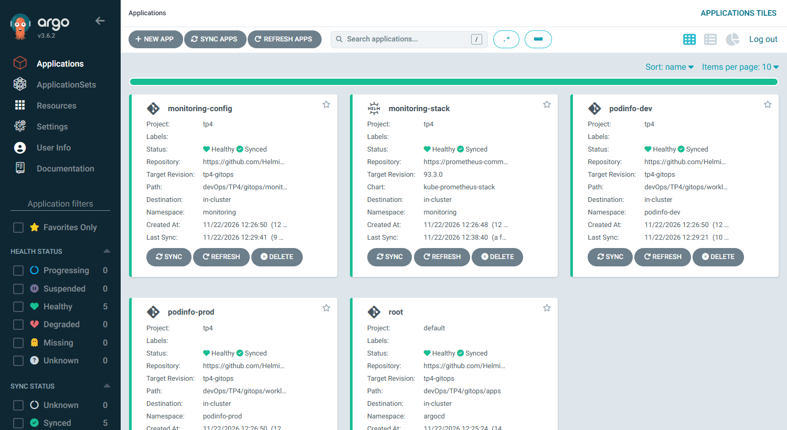
tp4-gitops; monitoring-stack comes from the Helm chart kube-prometheus-stack 93.3.0.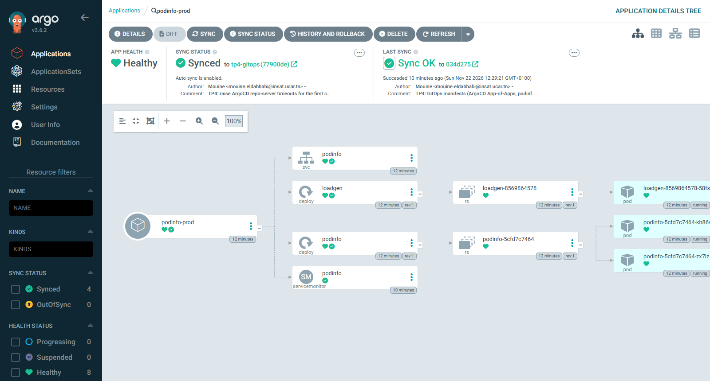
S1Automated continuous deployment Part A · scenario 1Member 2
One commit changes the prod overlay: image tag 6.16.0 → 6.17.0 and replicas 2 → 3. After git push
we only watch; no kubectl or argocd command touches the cluster.
$ git diff images: - name: ghcr.io/stefanprodan/podinfo - newTag: "6.16.0" + newTag: "6.17.0" replicas: - name: podinfo - count: 2 + count: 3 $ git commit -qam 'TP4 scenario 1: prod podinfo 6.16.0 -> 6.17.0, 2 -> 3 replicas' # 255722f $ git push origin tp4-gitops # 12:43:13 # no kubectl / argocd command from here: waiting for ArgoCD to pull the new revision 12:44:08 ArgoCD synced podinfo-prod to 255722f (+55 s after the push) 12:44:22 rollout finished: 3/3 pods on 6.17.0 (+69 s after the push) $ kubectl -n podinfo-prod get rs,pods -l app.kubernetes.io/name=podinfo replicaset.apps/podinfo-5cfd7c7464 0 0 0 17m # 6.16.0, scaled down replicaset.apps/podinfo-7dfdf7f5c7 3 3 3 15s # 6.17.0 $ kubectl -n podinfo-prod exec deploy/loadgen -- curl -s http://podinfo:9898/version { "commit": "fd3a834ed8d14b80ea334cf8a2fddd4597924da6", "version": "6.17.0" }
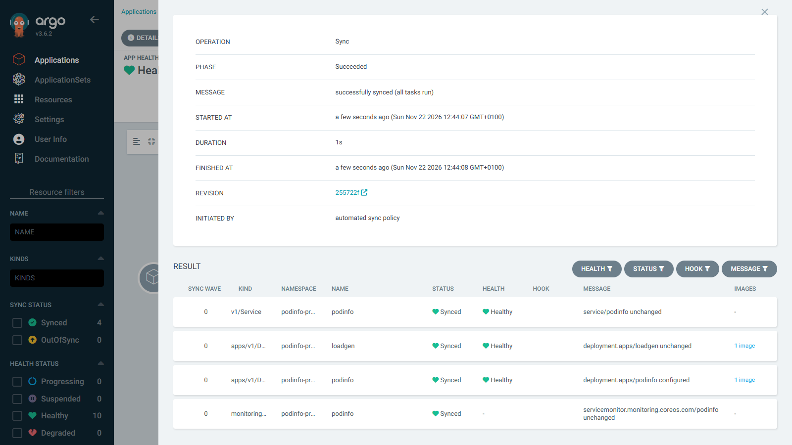
Sync operation details
- Initiated by: automated sync policy. No human pressed "Sync".
- Revision
255722f, the commit we pushed; duration 1 s. deployment.apps/podinfo configured: only the changed object is patched, the others are unchanged.
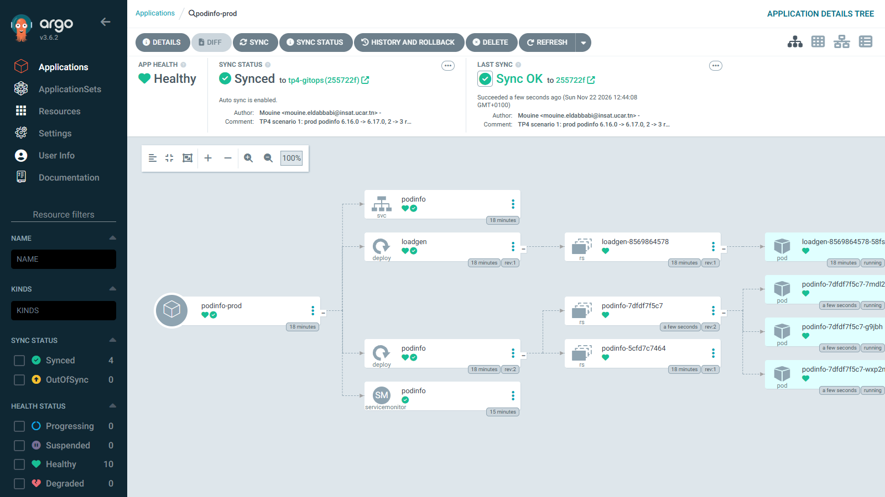
Tree after the deployment
- New ReplicaSet
podinfo-7dfdf7f5c7(rev:2) with 3 pods; the old one (rev:1) is kept at 0 for history. - The header shows the commit author and message. Git gives the audit trail of who changed production and why.
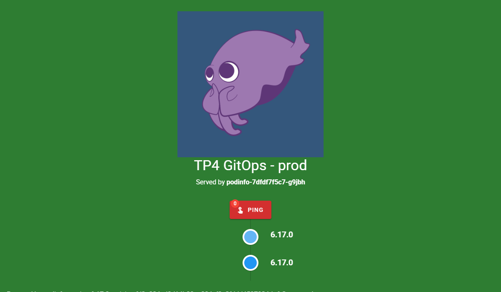
The application itself
- The podinfo UI now reports 6.17.0, with the prod colour and message coming from the overlay patch.
- Rolling update with
maxUnavailable: 0,maxSurge: 1: capacity never drops during the upgrade.
S2Configuration drift & self-healing Part A · scenario 2Member 2
Three unauthorised manual changes made from the terminal. ArgoCD watches the live objects (Kubernetes informers, no polling
needed for the cluster side), sees the difference with Git and, because selfHeal: true, re-applies the Git state.
### A. Manual deletion of the Deployment $ kubectl -n podinfo-prod delete deployment podinfo # 12:45:33.282 deployment.apps "podinfo" deleted from podinfo-prod namespace 12:45:33.680 argocd: OutOfSync/Healthy deploy: 0/3 ready, age 0s # already re-created 0.4 s later 12:45:35.238 argocd: Synced/Progressing deploy: 0/3 ready, age 2s 12:45:36.873 argocd: Synced/Progressing deploy: 1/3 ready, age 3s 12:45:38.353 argocd: Synced/Healthy deploy: 3/3 ready, age 4s ### B. Manual modification (same effect as kubectl edit on spec.replicas) $ kubectl -n podinfo-prod scale deployment podinfo --replicas=6 # 12:45:39.164 12:45:39.449 argocd: OutOfSync/Progressing spec.replicas=6 12:45:40.586 argocd: Synced/Healthy spec.replicas=3 # reverted in ~1.4 s ### C. Manual change of the container environment $ kubectl -n podinfo-prod set env deployment/podinfo PODINFO_UI_MESSAGE='hacked by hand' # 12:46:17.549 12:46:17.833 argocd: OutOfSync env=hacked by hand 12:46:18.904 argocd: Synced env=TP4 GitOps - prod $ kubectl -n argocd get events --field-selector involvedObject.name=podinfo-prod 11:45:39Z OperationStarted Initiated automated sync to '255722f548a92fd51025a08cc6875a58045c30e1' 11:45:39Z ResourceUpdated Updated sync status: Synced -> OutOfSync 11:45:40Z OperationCompleted Partial sync operation to 255722f… succeeded 11:45:40Z ResourceUpdated Updated sync status: OutOfSync -> Synced
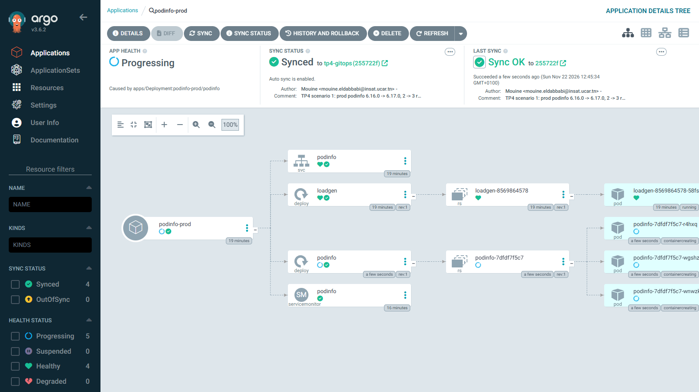
Caught during the self-heal (A)
- The
podinfoDeployment is back as rev:1, created "a few seconds" ago: it is a new object rebuilt from Git. - Its 3 pods are in
ContainerCreating, so health is Progressing while sync is already Synced. - "Last sync: Sync OK 12:45:34" is the automated self-heal sync, 1 s after the
kubectl delete.
S3Error handling: Sync Status vs Health Status Part A · scenario 3Member 3
We commit a tag that does not exist (6.99.0-broken). The manifest is valid YAML and ArgoCD applies it
successfully, but the kubelet can never pull the image.
- newTag: "6.17.0" + newTag: "6.99.0-broken" $ git push origin tp4-gitops # 12:47:20 · commit 4c45573 12:48:10 (+50s) sync=Synced rev=4c45573 health=Progressing | pods: 1 ContainerCreating, 3 Running 12:48:13 (+53s) sync=Synced rev=4c45573 health=Progressing | pods: 1 ErrImagePull, 3 Running 12:48:24 (+64s) sync=Synced rev=4c45573 health=Progressing | pods: 1 ImagePullBackOff, 3 Running … # the pod alternates ErrImagePull <-> ImagePullBackOff (exponential back-off) 12:49:42 (+142s) sync=Synced rev=4c45573 health=Degraded | pods: 1 ImagePullBackOff, 3 Running $ kubectl -n podinfo-prod get deploy podinfo -o jsonpath='{.status.conditions}' Available=True MinimumReplicasAvailable: Deployment has minimum availability. Progressing=False ProgressDeadlineExceeded: ReplicaSet "podinfo-585b655b77" has timed out progressing. $ kubectl -n podinfo-prod describe pod podinfo-585b655b77-2nmw4 Warning Failed kubelet Failed to pull image "ghcr.io/stefanprodan/podinfo:6.99.0-broken": rpc error: code = NotFound desc = … ghcr.io/stefanprodan/podinfo:6.99.0-broken: not found $ kubectl -n podinfo-prod exec deploy/loadgen -- curl -s http://podinfo:9898/version { "version": "6.17.0" } # the service still answers: the old pods are kept
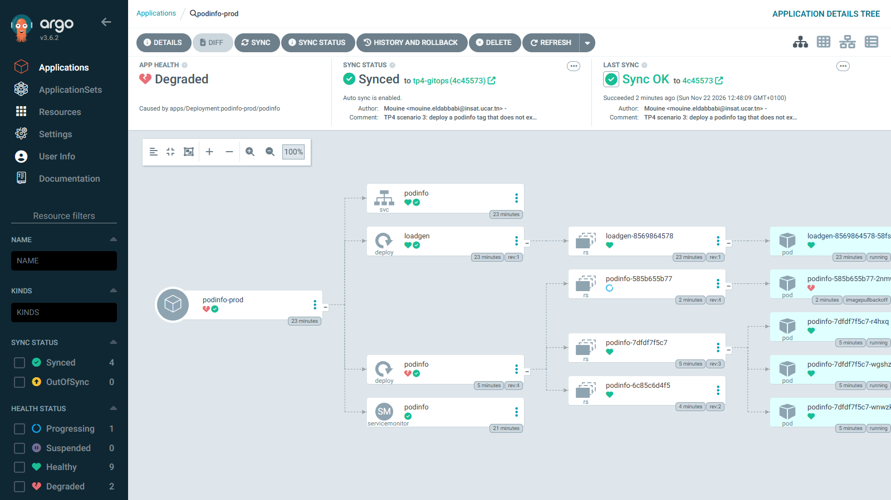
Synced ✔ but Degraded ♥̸
- Sync = Synced: the live Deployment is exactly what Git declares (tag
6.99.0-broken). ArgoCD did its job. - Health = Degraded: ArgoCD's health check for Deployments reads the
Progressingcondition, which becameProgressDeadlineExceededafter ourprogressDeadlineSeconds: 90. - Before that deadline the app is Progressing, because a rollout might still succeed.
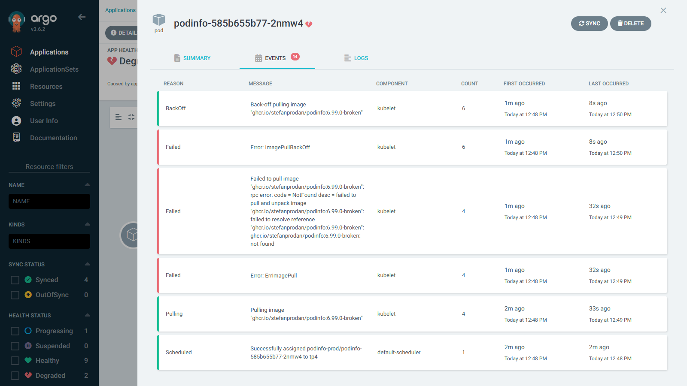
Root cause, from the UI
- The pod events show
Failed to pull image … not found, thenErrImagePull/ImagePullBackOff. - So the problem is in the content of the commit, not in the delivery: you need monitoring of health, not only of sync.
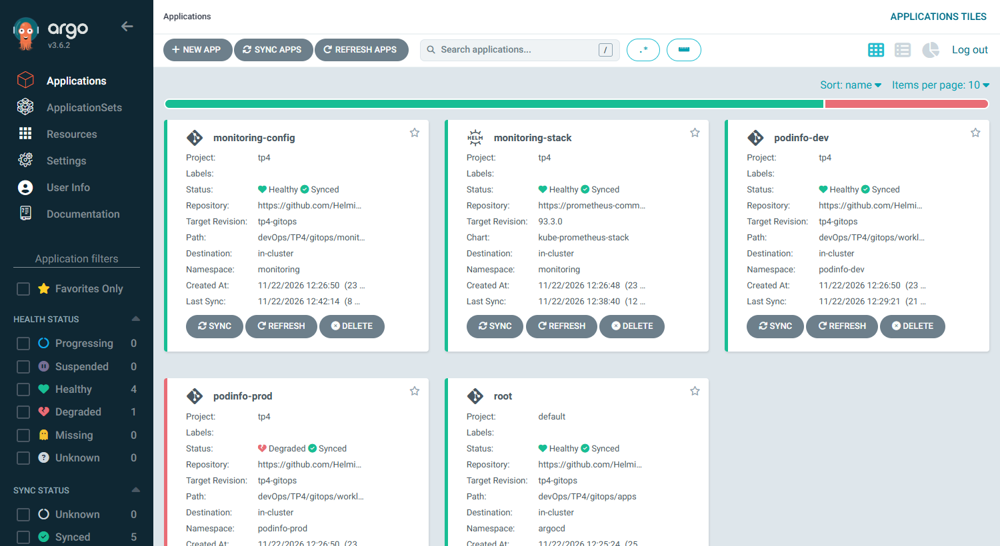
No outage thanks to the rollout strategy
- With
maxUnavailable: 0Kubernetes only removes an old pod once a new one is ready. The broken pod never gets ready, so the 3 pods running 6.17.0 keep serving. - A bad commit becomes a stuck rollout instead of downtime. It still has to be detected and fixed, which is what S4 and Part B do.
| Status | Question it answers | Values | In S3 |
|---|---|---|---|
| Sync status | Does the live state equal the desired state in Git? | Synced · OutOfSync · Unknown | Synced |
| Health status | Do the resources actually work? | Healthy · Progressing · Degraded · Suspended · Missing | Degraded |
S4History & fast rollback Part A · scenario 4Member 3
ArgoCD keeps the list of deployed revisions (revisionHistoryLimit: 10). We roll back to the last good one,
255722f (6.17.0), from the History and Rollback panel / CLI.
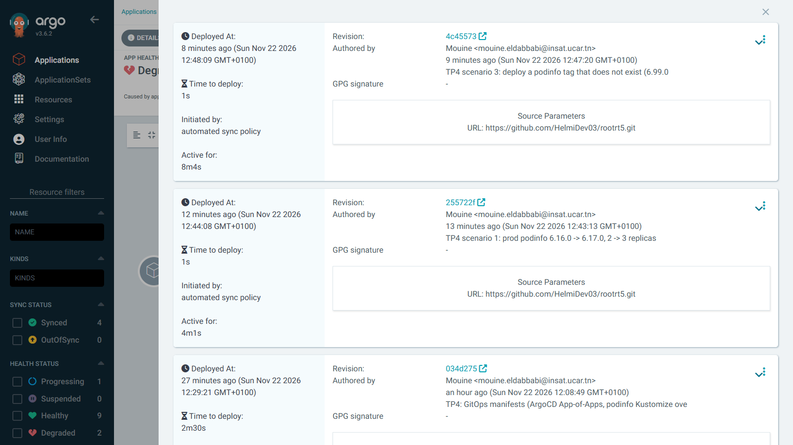
$ argocd app history podinfo-prod ID DATE REVISION 0 2026-11-22 12:29:21 +0100 tp4-gitops (034d275) 1 2026-11-22 12:44:08 +0100 tp4-gitops (255722f) # S1: 6.17.0, 3 replicas ← target 2 2026-11-22 12:48:09 +0100 tp4-gitops (4c45573) # S3: 6.99.0-broken # 1) rollback while automated sync is enabled $ argocd app rollback podinfo-prod 1 rpc error: code = FailedPrecondition desc = rollback cannot be initiated when auto-sync is enabled # 2) disable automated sync on podinfo-prod only $ argocd app set podinfo-prod --sync-policy none # 3) rollback to history id 1 $ argocd app rollback podinfo-prod 1 --timeout 300 # 12:56:37 → done 12:56:38 Sync Policy: Manual Sync Status: OutOfSync from tp4-gitops (75898f3) Health Status: Healthy Sync Revision: 255722f548a92fd51025a08cc6875a58045c30e1 $ kubectl -n podinfo-prod get deploy podinfo -o wide podinfo 3/3 3 3 11m podinfo ghcr.io/stefanprodan/podinfo:6.17.0
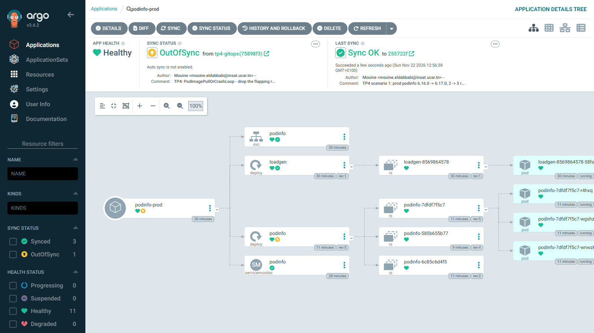
After the rollback: Healthy but OutOfSync
- Healthy: 3/3 pods on 6.17.0 within a second (the image was still cached).
- OutOfSync: the cluster now runs
255722fwhile the branch HEAD still says6.99.0-broken. The rollback created a deliberate drift. - "Auto sync is not enabled". This is the impact on Auto-Sync.
ArgoCDAppOutOfSync alert fired after 2 minutes, see below).
The permanent fix is to make Git right again (git revert) and then re-enable auto-sync.With App-of-Apps there is an extra trap: the child app's
syncPolicy is itself declared in Git and root has
selfHeal. Without our ignoreDifferences: /spec/syncPolicy on root, root would turn auto-sync back on within
seconds. Thanks to it, root stayed Synced during the whole rollback.# 4) while auto-sync is off: cluster = 255722f, Git = 6.99.0-broken ArgoCDAppOutOfSync firing since 11:56:56 UTC # 5) make Git the truth again, then re-enable automated sync + self-heal $ git revert --no-edit 4c45573 [tp4-gitops 73ce450] Revert "TP4 scenario 3: deploy a podinfo tag that does not exist (6.99.0-broken)" - newTag: "6.99.0-broken" + newTag: "6.17.0" $ git push origin tp4-gitops # 12:59:23 $ argocd app set podinfo-prod --sync-policy automated --self-heal --auto-prune 12:59:28 podinfo-prod Synced to 73ce450 $ kubectl -n argocd get app podinfo-prod -o jsonpath='{.spec.syncPolicy.automated}' {"prune":true,"selfHeal":true}
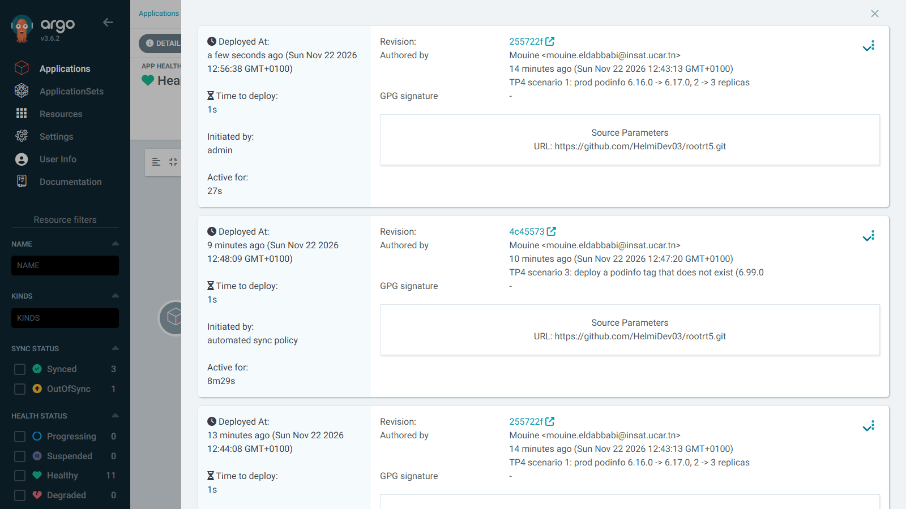
255722f.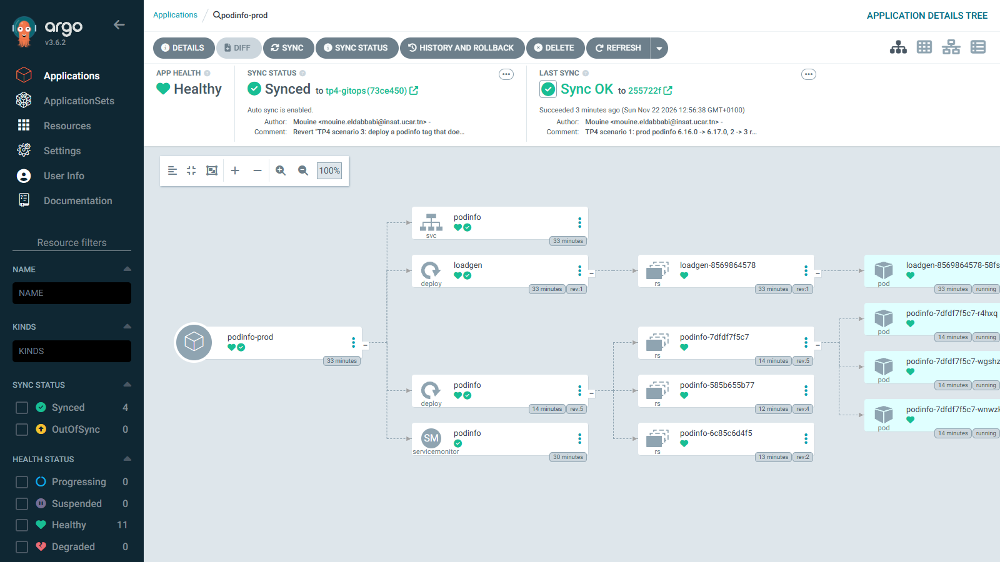
git revert: Synced to 73ce450, Healthy, auto-sync back on. No new sync was needed because Git now describes what is already running.3Observability stack & scraping Part B · steps 1–2Member 4
kube-prometheus-stack is deployed by the ArgoCD Application monitoring-stack (Helm chart pinned to 93.3.0,
values from our repository). Our own objects (ServiceMonitors, rules, dashboard) are a separate Application, monitoring-config,
so the stack can be upgraded independently of our configuration.
prometheus: prometheusSpec: # select EVERY ServiceMonitor / PodMonitor / PrometheusRule, not only those labelled release=kps: # applications ship their own scrape config (podinfo's ServiceMonitor is in its base) serviceMonitorSelectorNilUsesHelmValues: false podMonitorSelectorNilUsesHelmValues: false ruleSelectorNilUsesHelmValues: false scrapeInterval: 15s retention: 2d grafana: admin: existingSecret: grafana-admin # created by install.sh, never committed sidecar: dashboards: { enabled: true, label: grafana_dashboard, labelValue: "1", searchNamespace: ALL } # minikube does not expose these components: scraping them only creates "target down" noise kubeEtcd: { enabled: false } kubeControllerManager: { enabled: false } kubeScheduler: { enabled: false } kubeProxy: { enabled: false }
apiVersion: monitoring.coreos.com/v1 kind: ServiceMonitor metadata: { name: argocd-metrics, namespace: monitoring } spec: namespaceSelector: { matchNames: [argocd] } selector: matchLabels: { app.kubernetes.io/name: argocd-metrics } # application-controller :8082 endpoints: - port: metrics interval: 15s # + argocd-server-metrics (:8083), argocd-repo-server (:8084), argocd-applicationset-controller (:8080)
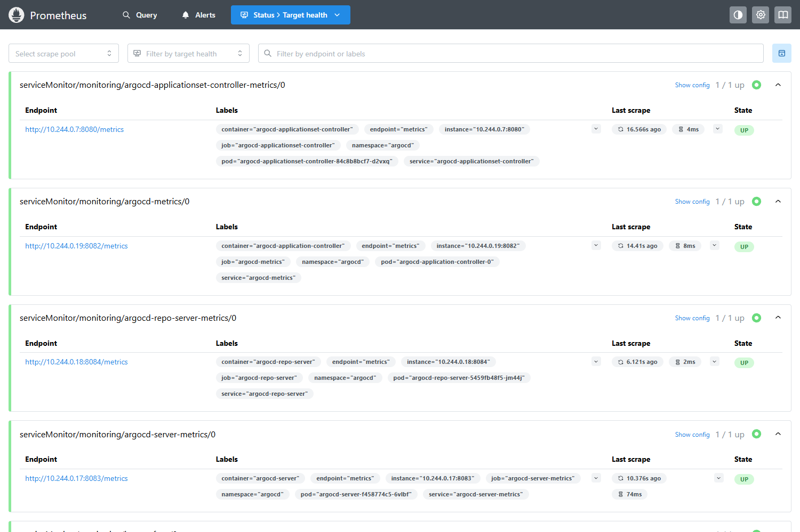
Key ArgoCD metrics
| Metric | Exposed by | Meaning / use |
|---|---|---|
argocd_app_info | application-controller | Gauge always equal to 1. Its labels carry the state: name, project, dest_namespace, sync_status, health_status, autosync_enabled. This is the basis of the status panels and of 2 alerts. |
argocd_app_sync_total | application-controller | Counter of sync operations per name and phase (Succeeded / Failed / Error). Every Git deployment, self-heal and rollback increments it. |
argocd_app_reconcile_bucket | application-controller | Histogram of reconciliation duration (comparison of Git with the cluster). |
argocd_git_request_total | repo-server | Calls to Git per request_type: ls-remote (polling for a new commit, every 30 s) and fetch (downloading a new revision). |
argocd_git_request_duration_seconds | repo-server | Latency of those calls; it would have revealed our slow first fetch. |
grpc_server_handled_total, argocd_redis_request_total | argocd-server | API / UI load and the Redis cache. |
4Unified Grafana dashboard & PromQL Part B · step 3Member 4
The dashboard "TP4 – GitOps & Workloads Overview" is a JSON file in Git
(monitoring/config/dashboards/tp4-gitops-overview.json). A configMapGenerator turns it into a ConfigMap labelled
grafana_dashboard=1, which the Grafana sidecar loads into the TP4 folder. Editing the dashboard is a commit like any
other: our first fix of the status timelines (commit 8062f8d) reached
Grafana through ArgoCD within seconds. Prometheus is the provisioned data source ($datasource variable), and
$namespace switches between prod and dev. Two annotations draw a vertical line on every panel for each
ArgoCD sync and each firing alert: that is how GitOps events are correlated with the curves.
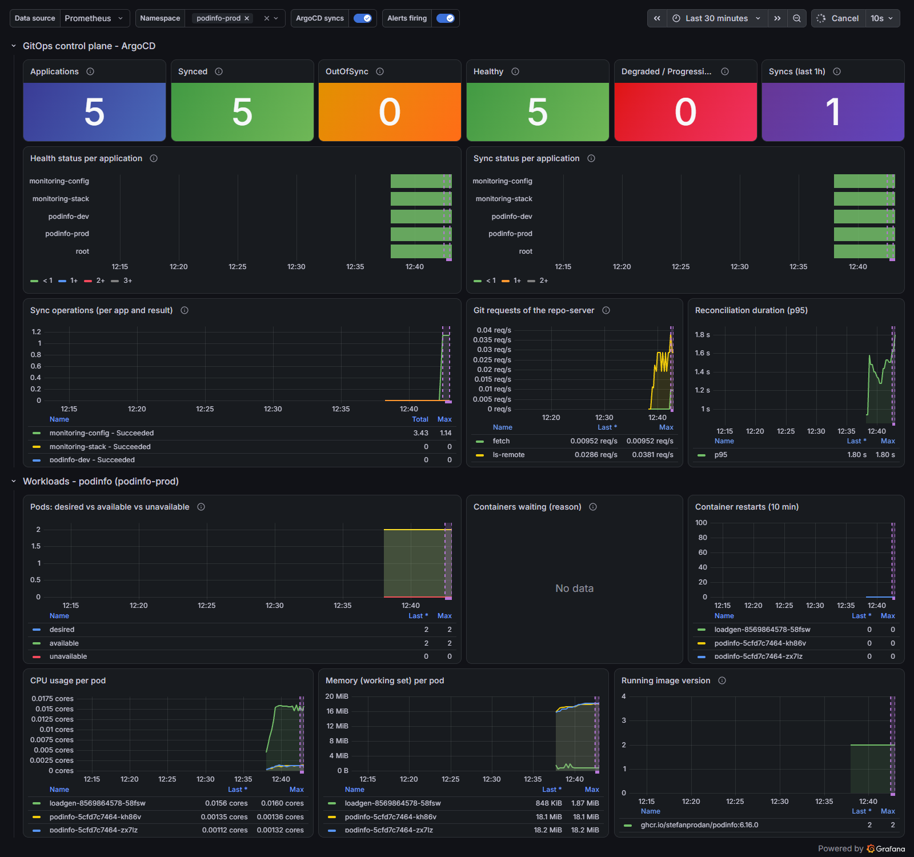
PromQL queries used
| Panel | PromQL |
|---|---|
| Synced / OutOfSync / Healthy / Degraded (stats) | count(argocd_app_info{sync_status="Synced"})count(argocd_app_info{sync_status="OutOfSync"}) or vector(0)count(argocd_app_info{health_status="Healthy"})count(argocd_app_info{health_status=~"Degraded|Progressing"}) or vector(0) |
| Health status per application (state timeline) | (max by (name) (argocd_app_info{health_status="Healthy"}) * 0)
or (max by (name) (argocd_app_info{health_status="Progressing"}) * 0 + 1)
or (max by (name) (argocd_app_info{health_status="Degraded"}) * 0 + 2)
or (max by (name) (argocd_app_info{health_status=~"Missing|Unknown|Suspended"}) * 0 + 3)The status is a label, not a value: each status gets a number, mapped to a colour (0 green, 1 blue, 2 red). The sync timeline uses the same idea. |
| Syncs (last 1 h) · sync history | round(sum(increase(argocd_app_sync_total[1h])))sum by (name, phase) (increase(argocd_app_sync_total[2m])) |
| Git requests · reconciliation | sum by (request_type) (rate(argocd_git_request_total[2m]))histogram_quantile(0.95, sum by (le) (rate(argocd_app_reconcile_bucket[5m]))) |
| Pods desired / available / unavailable | sum(kube_deployment_spec_replicas{namespace=~"$namespace", deployment="podinfo"})sum(kube_deployment_status_replicas_available{…}) · sum(kube_deployment_status_replicas_unavailable{…}) |
| Containers waiting (reason) | sum by (reason) (kube_pod_container_status_waiting_reason{namespace=~"$namespace"}) > 0 |
| Restarts | sum by (pod) (increase(kube_pod_container_status_restarts_total{namespace=~"$namespace"}[10m])) |
| CPU · memory per pod | sum by (pod) (rate(container_cpu_usage_seconds_total{namespace=~"$namespace", container!="", container!="POD"}[2m]))sum by (pod) (container_memory_working_set_bytes{namespace=~"$namespace", container!="", container!="POD"}) |
| Running image version | count by (image) (kube_pod_container_info{namespace=~"$namespace", container="podinfo"}) |
| HTTP rate · 5xx ratio · latency | sum by (status) (rate(http_request_duration_seconds_count{namespace=~"$namespace", path!~"healthz|readyz"}[2m]))sum(rate(…_count{…, status=~"5.."}[2m])) / sum(rate(…_count{…}[2m]))histogram_quantile(0.95, sum by (le) (rate(http_request_duration_seconds_bucket{…}[2m])))Kubelet probes are excluded so that the panels show real traffic. |
| Active alerts · annotations | ALERTS{alertname=~"ArgoCD.*|Pod.*|Podinfo.*"}sum by (name, phase) (increase(argocd_app_sync_total[1m])) > 0 (sync annotation) |
5Alerting Part B · step 4Member 4
The rules are a PrometheusRule in Git, evaluated by Prometheus every 15 s and sent to Alertmanager when firing.
Grafana lists them too (data-source-managed rules) with the Normal / Pending / Firing states.
| Alert | Expression | For | Severity |
|---|---|---|---|
| ArgoCDAppDegraded | max by (name, dest_namespace) (argocd_app_info{health_status="Degraded"}) == 1 | 2m | critical |
| ArgoCDAppOutOfSync | max by (name, dest_namespace) (argocd_app_info{sync_status="OutOfSync"}) == 1 | 2m | warning |
| ArgoCDSyncFailed | sum by (name) (increase(argocd_app_sync_total{phase=~"Error|Failed"}[5m])) > 0 | – | warning |
| PodImagePullOrCrashLoop | max by (namespace, pod, container) (kube_pod_container_status_waiting_reason{namespace=~"podinfo-.*", reason=~"ErrImagePull|ImagePullBackOff|CrashLoopBackOff"}) == 1 | 1m | critical |
| PodinfoHighErrorRate | 5xx ratio of podinfo > 20 % | 5m | warning |
(namespace, pod, container, reason). During S3 it stayed pending forever: the kubelet
switches the pod between ErrImagePull and ImagePullBackOff every few seconds, each switch changes the
reason label, Prometheus sees a new series and restarts the for: 1m timer. The fix was to remove
reason from the result. It was shipped like everything else, through Git and ArgoCD, while the incident was still open
(commit 75898f3, logs/06-alerte-fix-label-reason.txt); the
alert fired 58 s after the new rule was loaded. Lesson: never keep a flapping label in an alert with a for clause.- max by (namespace, pod, container, reason) ( + max by (namespace, pod, container) ( $ git push origin tp4-gitops # 12:50:50 12:51:40 monitoring-config synced to 75898f3 (PrometheusRule updated, operator reloads Prometheus) 12:51:41 ArgoCDAppDegraded=pending PodImagePullOrCrashLoop=pending 12:51:56 ArgoCDAppDegraded=firing PodImagePullOrCrashLoop=pending 12:52:38 ArgoCDAppDegraded=firing PodImagePullOrCrashLoop=firing
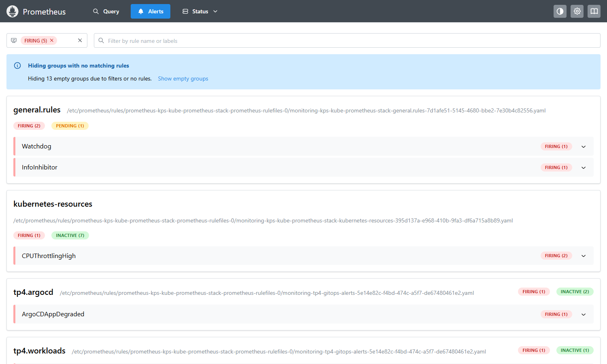
tp4.argocd and tp4.workloads each have one firing alert. Watchdog always fires on purpose (dead-man's switch). CPUThrottlingHigh comes from the 50m CPU limit of the load generator.
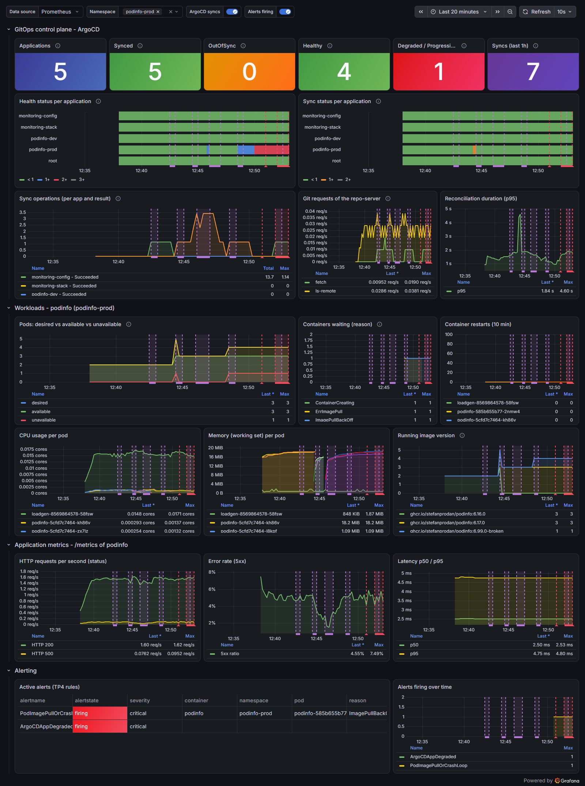
6.99.0-broken container next to the 3 on 6.17.0. Containers waiting shows
ErrImagePull / ImagePullBackOff, and unavailable = 1. The purple lines are the ArgoCD sync annotations; the table at the bottom lists both alerts as firing.S5Correlation: GitOps, metrics & alerting Part B · scenario 5Member 4
Three commits, observed only through Prometheus (sampled every 10 s) and Grafana: (1) scale up 3 → 5 replicas,
(2) re-inject the broken tag, (3) fix it with git revert. This time no ArgoCD rollback: the
incident is solved through GitOps only.
### t0 - initial state 13:00:22 Synced/Healthy desired=3 available=3 unavailable=0 syncs=7 alerts: none ### Step 1 - scale up through Git: 3 -> 5 replicas # commit 2d87a01 - count: 3 + count: 5 $ git commit -qam 'TP4 scenario 5: scale prod podinfo 3 -> 5 replicas' && git push # 13:00:23 13:01:10 Synced/Progressing desired=3 available=3 unavailable=0 syncs=7 alerts: none 13:01:21 Synced/Healthy desired=5 available=5 unavailable=0 syncs=7 alerts: none ### Step 2 - re-inject the faulty image tag through Git # commit 155af2e - newTag: "6.17.0" + newTag: "6.99.0-broken" $ git commit -qam 'TP4 scenario 5: re-inject the non-existent tag 6.99.0-broken' && git push # 13:01:21 13:02:40 Synced/Progressing desired=5 available=5 unavailable=0 syncs=8 alerts: none 13:02:51 Synced/Progressing desired=5 available=5 unavailable=1 syncs=8 alerts: PodImagePullOrCrashLoop=pending 13:03:57 Synced/Progressing desired=5 available=5 unavailable=1 syncs=9 alerts: PodImagePullOrCrashLoop=firing 13:04:18 Synced/Degraded desired=5 available=5 unavailable=1 syncs=9 alerts: PodImagePullOrCrashLoop=firing 13:04:29 Synced/Degraded … ArgoCDAppDegraded=pending PodImagePullOrCrashLoop=firing 13:06:29 Synced/Degraded … ArgoCDAppDegraded=firing PodImagePullOrCrashLoop=firing ### Step 3 - resolve through GitOps: git revert of the faulty commit # commit b1cfa4d $ git revert --no-edit 155af2e && git push origin tp4-gitops # 13:06:56 13:07:43 OutOfSync/Degraded desired=5 available=5 unavailable=1 syncs=9 alerts: ArgoCDAppDegraded=firing PodImagePullOrCrashLoop=firing 13:07:54 Synced/Healthy desired=5 available=5 unavailable=0 syncs=10 alerts: ArgoCDAppDegraded=firing 13:08:04 Synced/Healthy desired=5 available=5 unavailable=0 syncs=10 alerts: none
- Desired follows Git (3 → 5) as soon as ArgoCD syncs, and available catches up when the new pods pass their readiness probe (11 s).
- The sync counter (
argocd_app_sync_total) goes up by one per commit: 7 → 8 → 9 → 10. PodImagePullOrCrashLoopfires first, after 1 min of ErrImagePull (≈ 2 min 36 s after the push).ArgoCDAppDegradedfollows: 90 s progress deadline + 2 minfor. Two alerts, two levels: the pod (cause) and the delivery (impact on the application).- Resolution through Git only: 58 s after the revert the broken pod is gone (unavailable = 0, Healthy) and both alerts are resolved 10 s later. In Grafana the rules return to Normal.
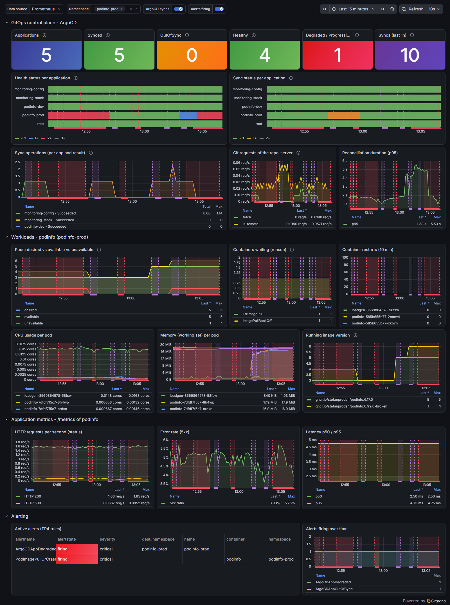
6.99.0-broken image next to 5 × 6.17.0, podinfo-prod red in the health timeline but green in the sync timeline, and the alert table and annotations in red.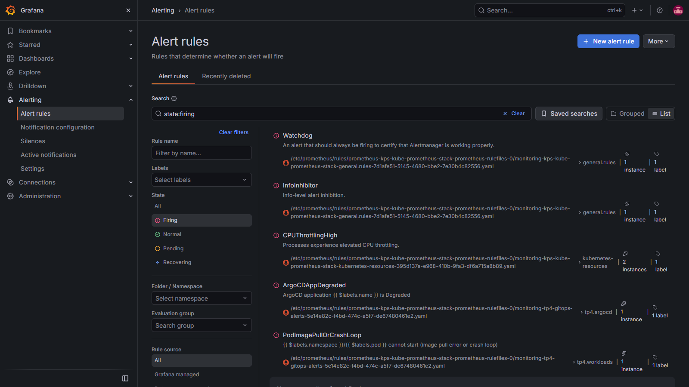
ArgoCDAppDegraded and PodImagePullOrCrashLoop are Firing.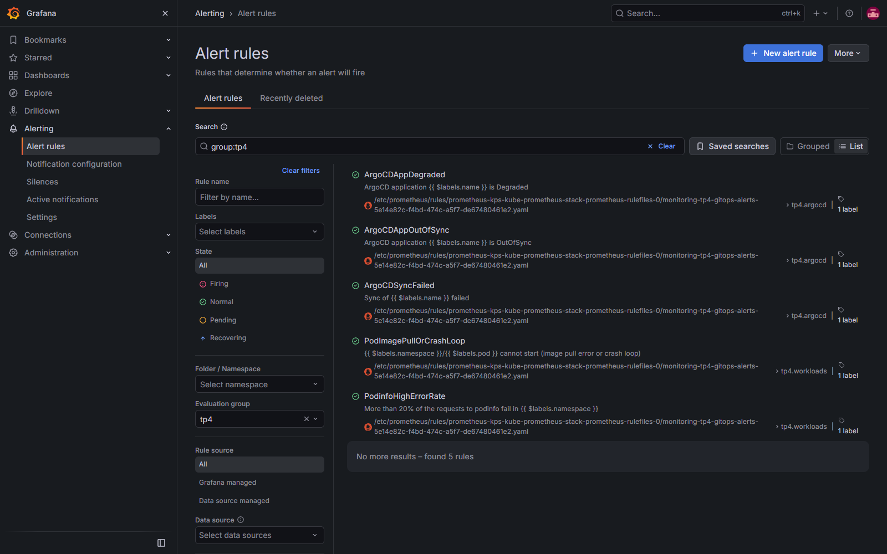
git revert: the 5 TP4 rules (groups tp4.argocd, tp4.workloads) are back to Normal.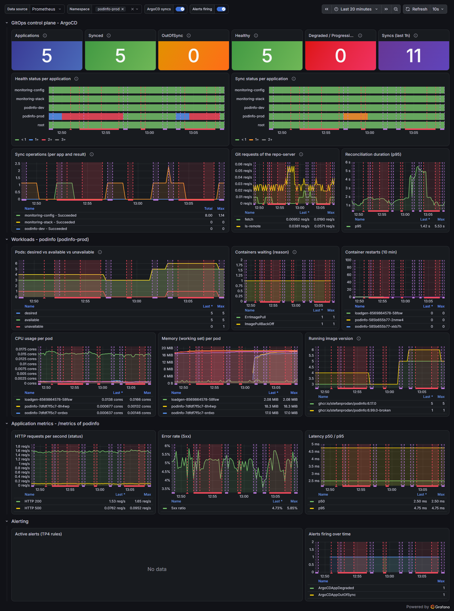
tp4-gitops (podinfo-prod: 6.17.0, 5 replicas).⚖Engineering review: security, good practices, limits
Security
- Pull model: no CI job and no laptop needs cluster credentials to deploy. Only ArgoCD, inside the cluster, can change it, and Git is the only input. The attack surface becomes write access to the branch, which should be protected (required reviews, signed commits: ArgoCD can verify GPG signatures per project).
- No secret in Git: the Grafana password is created by the bootstrap in a Secret and referenced with
existingSecret. In production we would use Sealed Secrets, SOPS or External Secrets so that secrets are versioned too, but encrypted. - Least privilege: AppProject
tp4limits repos, destination namespaces and cluster-scoped kinds. A wrongdestinationin a manifest is rejected instead of deploying anywhere. - Hardened workload: non-root UID,
readOnlyRootFilesystem, all capabilities dropped,seccompProfile: RuntimeDefault, requests/limits, liveness and readiness probes. - Pinned versions: ArgoCD
v3.6.2, chart93.3.0, image tags, neverlatest. A deployment is reproducible and an upgrade is a visible diff. - To do for real use: rotate / delete
argocd-initial-admin-secretand use SSO (Dex/OIDC) with RBAC; expose the UIs behind an Ingress with TLS instead of port-forwards; configure Alertmanager receivers (mail/Slack). Ours only collects alerts.
Trade-offs and limits observed
- Polling latency: 55 s from push to sync, because GitHub cannot reach a local cluster for a webhook. We lowered the poll to 30 s, but polling costs Git calls (visible in the
ls-remotepanel). On a reachable cluster, a GitHub webhook makes it near-instant. - Self-heal also erases legitimate hotfixes: that is the point, but the team must accept "commit first". Fields managed by other controllers (an HPA's
replicas, for example) must be listed inignoreDifferences, or ArgoCD and the HPA fight each other. - ArgoCD validates delivery, not the content: S3 was "Synced" with a non-existent image. A CI step before merge (kustomize build, kubeconform, check that the image tag exists) or progressive delivery (Argo Rollouts canary with metric analysis) would catch it earlier. Health-based alerts are the last safety net.
- Rollback vs revert: the UI rollback is fast (1 s) but leaves the app OutOfSync and auto-sync disabled.
git revertkeeps Git as the truth and the audit trail; it was just as fast here (the cluster converged 5 s after the push). - Mono-repo shared with the site: the first clone pulls the whole course repository (~13 MB), hence the timeout we had to raise. A dedicated manifests repository (or ArgoCD sparse/shallow fetch) is lighter. We used a dedicated branch to keep the demo commits off
main. - Single-node minikube: no high availability for ArgoCD, Prometheus or the apps. Alert noise: CPUThrottlingHigh on the load generator's 50m limit, which is harmless but should be tuned.
★Key takeaways
install.sh, and everything after it is pulled.